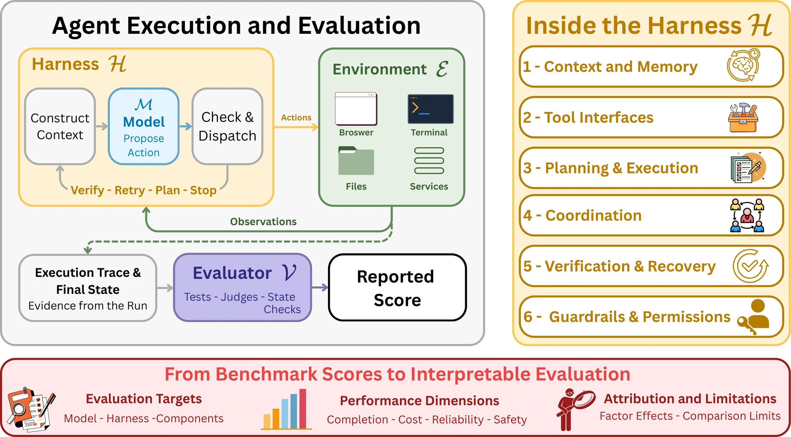
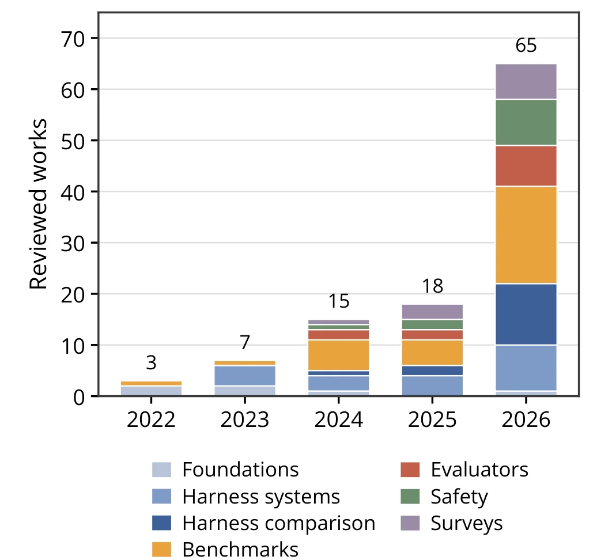
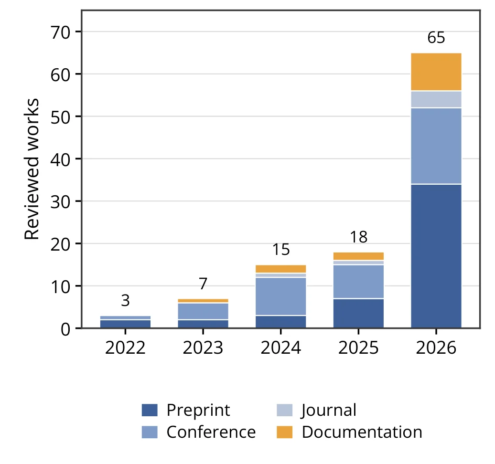
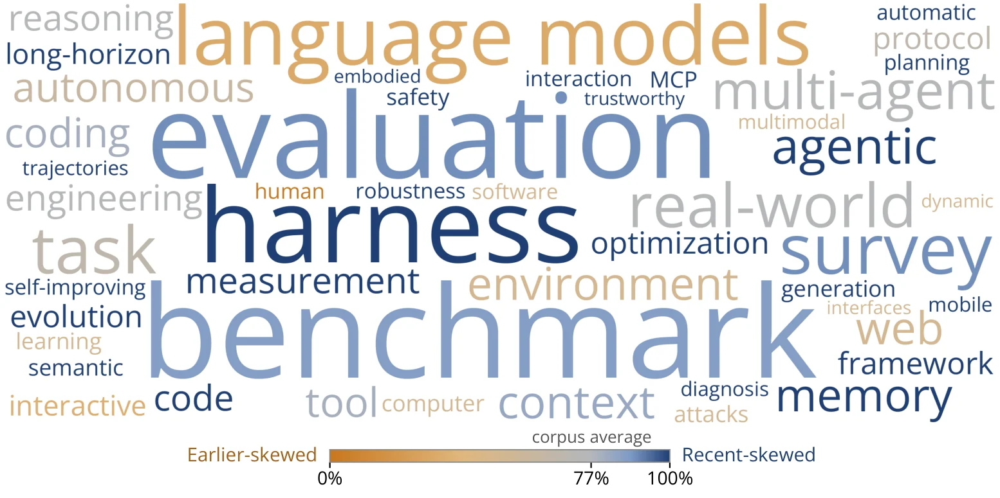
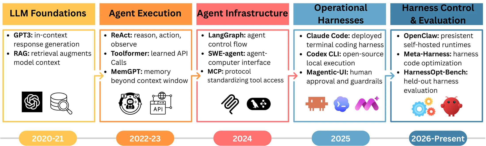

M
01
Model
Backbone weights, decoding choices, and tool-use capability.
Survey · 2026
Systems, Benchmarks, and Protocols
A benchmark score characterizes a complete evaluation configuration, not the model alone.
Vector Institute University of Agder
Abstract
LLM-based agents combine model capabilities with memory, tools, and execution control. Changing this surrounding harness can alter performance and even reverse model rankings, yet benchmark reports often omit the configuration, resource budget, or scoring procedure needed to interpret the result. This survey introduces a four-factor framework for harness-aware evaluation, maps representative systems and benchmarks to it, and provides reporting guidance for more consistent and reproducible comparisons.
The framework
Every result emerges from four interacting factors, under a protocol that controls tasks, budgets, repeated runs, and aggregation.
01
Backbone weights, decoding choices, and tool-use capability.
02
Context, tools, memory, control flow, verification, and permissions.
03
Tasks, data, applications, services, users, and execution sandbox.
04
Tests, rubrics, judges, outcome checks, and success criteria.

Inside the harness
Select, retain, retrieve, and compress information across steps.
Define operations, schemas, dispatch, and returned observations.
Decompose tasks and govern how plans become actions.
Assign roles, share state, and route work across multiple agents.
Check intermediate work, retry failures, and revise trajectories.
Constrain actions, enforce boundaries, and escalate to people.
Same model, different harness
Each circle is one change, with the model and benchmark held fixed. A model swap on the same interface, GPT-4 Turbo to GPT-4o, moved τ-bench by 3.5 points. These contrasts come from separate studies, so they are not a ranking.
Evidence base
The selected corpus is recent and unevenly distributed, revealing where evidence is strongest and where attribution remains limited.



What this survey contributes
Connects model, harness, environment, and evaluator in one configuration, interpreted under an explicit protocol.
Distinguishes factors that studies explicitly evaluate from those merely present in the execution setting.
Identifies what evaluations should report and where evidence remains thin across adaptation, resources, and interactions.

Open challenges
Report the initial configuration, modification space, feedback, update frequency, and resulting harness.
Compare systems under matched or normalized tokens, calls, time, tool use, compute, and human intervention.
Test interventions across multiple models, environments, and task families with controlled comparisons.
Measure how model, harness, environment, and evaluator affect one another without exhaustive search.
Develop standardized, machine-readable descriptions of configurations, budgets, and repeated-run procedures.
Citation
The publication identifier will be updated when the paper is posted.
@article{radwan2026harness,
title = {Harness-Aware Evaluation of LLM Agents:
Systems, Benchmarks, and Protocols},
author = {Radwan, Ahmed Y. and Vasilakos, Athanasios V.
and Raza, Shaina},
journal = {arXiv preprint arXiv:XXXX.XXXXX},
year = {2026}
}Acknowledgements
Resources used in preparing this research were provided, in part, by the Province of Ontario, the Government of Canada through CIFAR, and companies sponsoring the Vector Institute. This research was funded by the European Union’s Horizon Europe AIXPERT project (Grant Agreement No. 101214389).